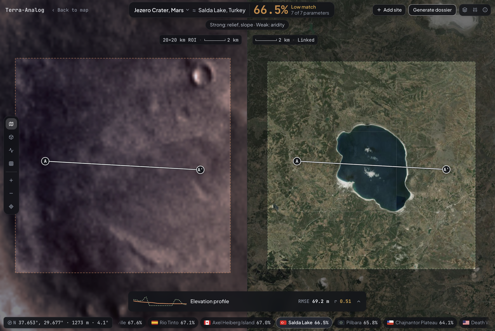
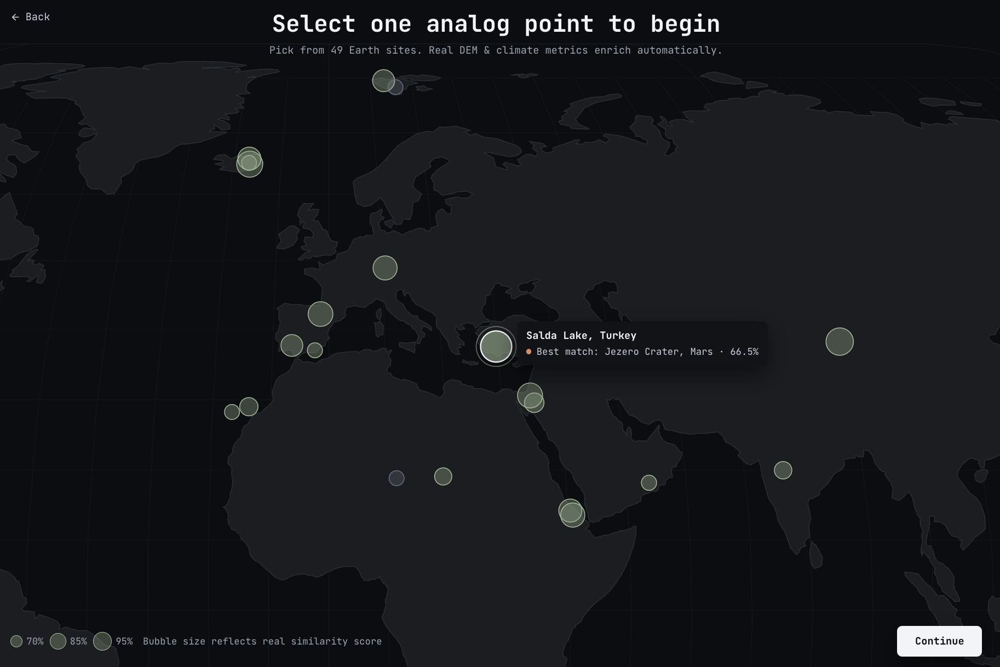
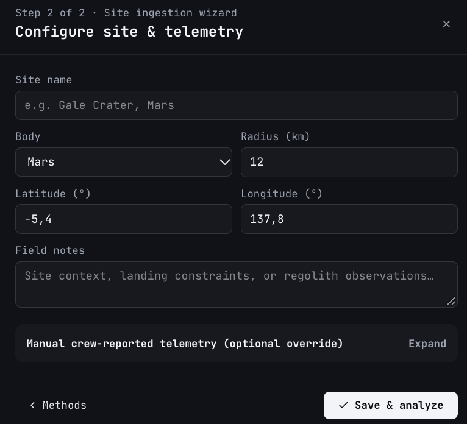
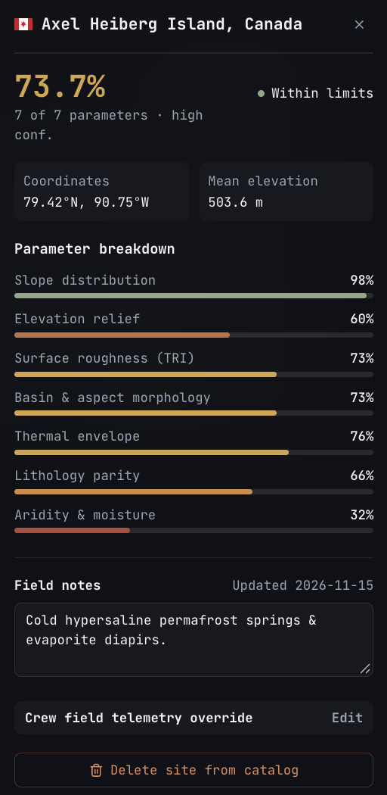
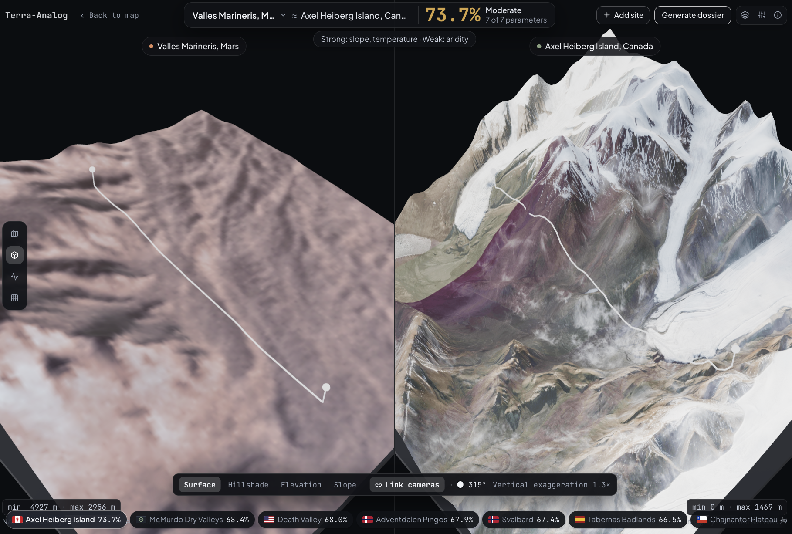
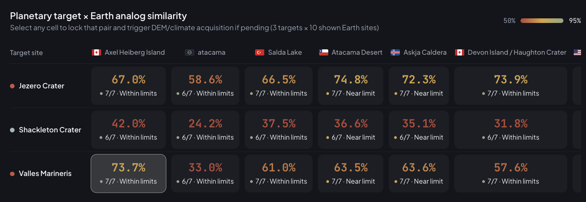
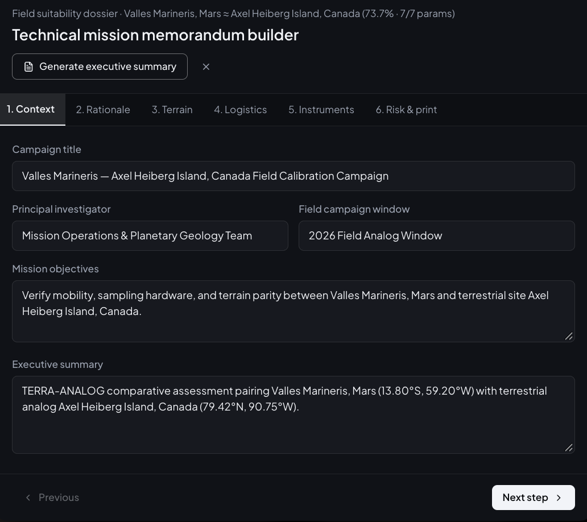
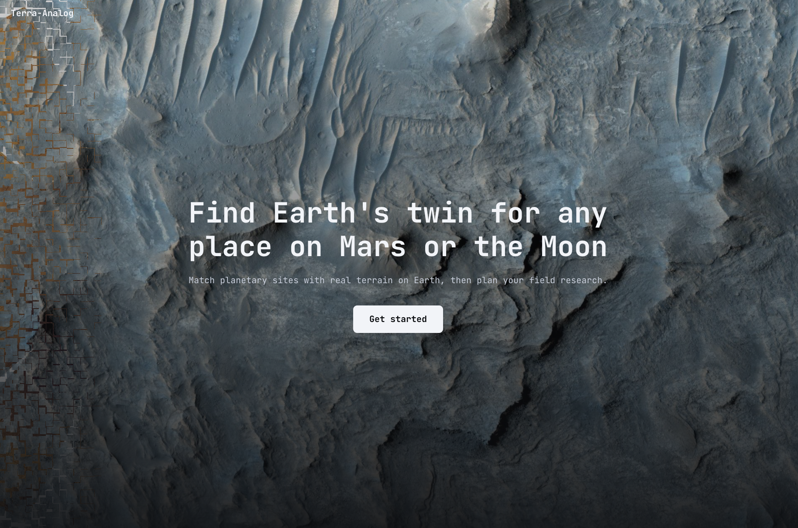

Dual map & elevation profile
Pan linked maps together and inspect A–A' cross-sections with elevation RMSE and correlation.
Find Earth's twin for any place on Mars or the Moon.
ProQuark · NASA Space Apps Challenge
Teams compare maps, papers, and elevation files by hand; the process cannot be repeated consistently and candidates are not scored against the same parameters.
Wheels, suspension, and autonomy require validated slopes and surface roughness before launch.
Crews rehearse EVA traverses and navigation on terrain that matches the landing zone.
Habitat siting depends on local relief, slopes, and surface characteristics.
Select a site on the world map to look for an Earth analog.
Measurable terrain features are computed directly from NASA elevation data.
Review scored matches and compare both locations in the dual map.

Configure target coordinates and sampling radius to pull orbital and Earth elevation data, then evaluate each analog site across seven terrain and climate parameters.



Pan linked maps together and inspect A–A' cross-sections with elevation RMSE and correlation.

Examine slope geometry and surface roughness in a camera-linked three-dimensional view.

Compare Mars and Moon targets against candidate Earth sites in one table.

Build printable six-section suitability memos with metrics and field logistics.
Built on open NASA data, Terra-Analog lowers preparation costs and points teams directly to real sites on Earth.
Launch the appTeam ProQuark · NASA Space Apps Challenge
